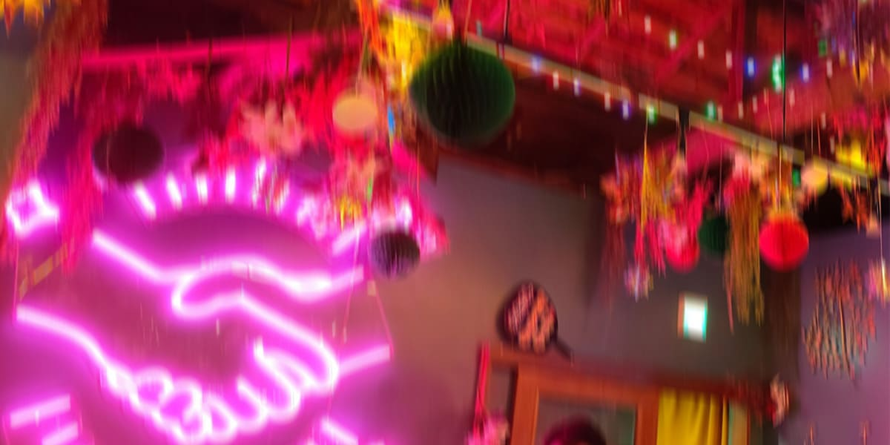

ネビュラ

2061/12/19
腹が減っていた。
「あははっ！ 羽車くん、顔真っ赤だよ？」
向かいに座る女が、机に肘をついて俺の顔を覗き込んで笑う。店に入るまではあれほど厚着だったはずなのに、いつの間にか上着を脱ぎ捨てて薄着になっていた。露出した肌が酒の熱で赤く染まっている。俺も、この女も、相当に酔っ払っていた。
「お前が『どっちが先に潰れるか飲み比べしよ』とか言い出すからだろ。はあ……暑っ」
「もうそろそろ出る？ 外の風で体冷やそ」
当然のように俺が会計を済ませて店を出る。この街の外の風は年中冷たいが、十二月ともなればなおさらだった。アルコールで火照った身体が一気に冷気に侵食されていく。
ほぼ無意識のまま、スラックスのポケットに手を突っ込み、潰れた煙草の箱を取り出した。だが、指先に伝わる手応えが妙に軽い。そういえば、最後の一本は数時間前にとっくに吸い殻にしていたことを思い出した。無性に腹が立ち、空の箱を握りつぶして薄暗い路地裏へと投げ捨てる。
「なあ、一本くれよ」
隣の女を見ると、すでに自分の煙草に火を点けていた。俺に見せつけるように、紫煙をふうっと吐き出す。
「羽車くん、この後も暇だよね？」
「まあ……。いいから早くくれよ、一本くらい」
「じゃあさ、ホテル行こーよ。君、顔良いし。オッケーしてくれたらこの高い煙草あげる」
女は咥えていた煙草を細い指先で挟み、飢えた犬におやつを見せびらかすように目の前で揺らした。ゆらゆらと立ち上る煙からは、異質なほど甘ったるい匂いが漂ってくる。
「いや、行かないから。てかその煙草匂いやばいだろ。何混ぜてんだよ」
「えー、冷た。結構飲んでたからそっち系は無理な感じ？ つまんないの」
期待に応えられない犬にやる褒美はない、ということか。煙草は再び女の唇へと挟み直された。
「じゃあ今日はもう帰る！ また暇な時飲み行こーね」
ヒールの音を響かせ、女は雑踏の中へと消えていった。鼻腔にこびりつくような甘ったるい匂いと、酷い不快感だけをこの路地に残して。
・・・
・・・
・・・
・・・
・・・
腹が減っていた。
背が高いから、顔が良いから。それだけで女は寄ってくる。お手して、撫でさせて、お座りできたら、はい、おやつ。
俺はそんな女たちに喜んで尻尾を振ってみせていた。腹が減っていたからだ。だが、どれだけ愛を貪っても、この飢えが満たされることはなかった。味が気に入らないのか、それとも俺が本当に求めているものとは違うのか。
そんなことはどうでもいい。なんでもいいから、とにかくこの渇きを満たしてくれ。俺はもう限界なんだ。
「げっちゃん！ 炒飯食べる！」
建物の隙間に押し込まれたカラフルな扉を開けると、そこには我が家よりも暖かい空気が漂っていた。行きつけのカラオケバー「ミチカケ」。
「久しぶりやね羽車ちゃん。顔真っ赤、また女の子と飲んできたん？」
カウンターの奥から、ごつい体格に似合わない黄色い声を上げたのはオーナーのげっちゃんだ。
「飲み比べさせられてさ。つまみ食う暇もなかったわ」
いつものカウンター席に腰を下ろし、隣の空いている椅子に上着を放り出す。この店は立地が悪いのか、それとも一見を寄せ付けない独特な佇まいのせいか、いつ来ても顔ぶれが同じだった。今日も端の席で滅多に口を開かない常連のおっさんと、すでに出来上がって一段と陽気になっているカタバミおばさん、そのおめかし友達のマモメさん。それと、この女々しい大男だけ。面白味のない、いつものメンツだ。
「羽車ちゃん、いっつも女の子と遊んどるけど、彼女は作らんの？」
げっちゃんが手際よく中華鍋を振りながら、品定めするような目を向けてくる。
「彼女ー？ 別に作ってもいいけど、そしたら他の子と遊べなくなるじゃん。それに俺、基本的に一人でいたいタイプだし」
「寂しんぼが何言ってんの。はい、げっちゃん特製バカうま炒飯！」
小綺麗なプラスチックの皿にこんもりと盛られた炒飯が目の前に差し出される。受け取った金属製のスプーンで、さっそく一塊を口に放り込んだ。
「美味しい？」
覗き込んできたげっちゃんに、俺は咀嚼しながらスプーンを握った右手で親指を立ててみせる。
「いつも通り」
酒をメインで出すバーのくせに、この炒飯はそこらの中華屋並みに美味い。炒飯に限らず、げっちゃんの作る中華にハズレはなかった。なんでこの男、カラオケバーなんて経営してんだろ。
げっちゃんと女の話や酒の失敗談、下世話なゴシップを適当に交わしながら、かなり遅いペースで炒飯を食べ進めていく。なんの脈絡もない話を突然切り出したり、不謹慎な言葉を平気で吐き捨てたりできるこの空間にいる時だけは、俺のすきっ腹はいつの間にか満たされていくのを感じていた。この時間が、ずっと続けばいい。
「来るたび思うけど、この店ホント居心地いいわ」
ぽつりと溢した俺に、げっちゃんがふふっと不敵に笑う。
「急に褒めても何も出んよー？ もう一皿炒飯作っちゃおうか？」
「出るんじゃん。……いや、もう腹いっぱいだから遠慮しとく」
スプーンを皿に置き、一息ついたその時だった。チリン、と入り口のドアに取り付けられたベルが軽やかな音を立てる。
「いらっしゃーい！」
げっちゃんがいつもの営業用トーンで入り口に目を向けた。冷たい夜気と一緒に店内に滑り込んできたのは、寒さのせいか酒のせいか既に顔が赤くなっている男と、ピンクネオン色の炎が頭部で揺れているプラズマの二人組だった。
外の寒さに身を縮こまらせながら、男の方が「ここ、やってる？」と暖簾をくぐるようにして店内を見回す。その視線が、カウンターの端に座る俺のところでピタリと止まった。つられて俺もそいつの顔を見る。見覚えのある顔だった。いや、男の方だけじゃない。その後ろから遅れて入ってきた、ピンクの炎人間の方にも強烈な既視感がある。
「あ」
俺が声を漏らすより早く、男のほうが大きく目を見開き、俺を指差した。
「あーーーっ！！ 羽車じゃん！！ お前なんでここにいんの！？」
静かだったバーの空気が、その大声で一気に弾けた。狭いテーブル席で談笑していたカタバミおばさんたちが驚いてこちらを振り返る。俺は思わず、さっきまで感じていた居心地の良さがどこかへ吹き飛んでいくような予感を覚えながら、顔を引きつらせた。
「あの二人、羽車ちゃんのお友達？」
げっちゃんが少し目を丸くしながら、カウンター越しに小声で訊ねてくる。
「えっ、まあ……」
歯切れの悪い返事しかできない俺の隙を、そいつらは見逃さなかった。
「そうなんですよ！ こいつと俺ら、高校の時の同級生で大親友なんですよ！ うわー、マジで久しぶり！ 元気してた！？」
俺に答える猶予すら与えず、高校時代の大親友その一こと、煙がぐいぐいと距離を詰めてくる。そいつは俺が隣の椅子に置いていた上着を勝手に退けると、当然のような顔をして腰を下ろした。
「煙、お前声デカいって……。すみません、うちの馬鹿が騒いじゃって」
大親友その二こと、花火がまるで出来の悪い息子の母親みたいな顔をして、他のお客やげっちゃんにペコペコと頭を下げた。そうして煙の隣の席へと滑り込む。座った拍子に、頭部でゆらゆらと揺れるピンクネオン色の炎からパチパチと火花が散った。
せっかく炒飯で満たされ、静かに余韻に浸っていた俺の聖域は、この騒がしい二人組の乱入によって一瞬にして賑やかな居酒屋へと変貌を遂げてしまった。
・・・
・・・
・・・
「かんぱーい！」
それぞれが頼んだ酒が届き、掲げたグラスがカチリと音を立てる。
「いやー、なんか懐かしいね、三人で会うの！ しかもみんなで酒飲んでる！」
煙は満面の笑みでグラスを煽る。やはり店に来る前から相当出来上がっていたらしく、普段の数倍気持ち悪い陽気なテンションに、俺は若干身体を引いた。
一方、煙の隣に座る花火の方はといえば、グラスを思い切り逆さまにして頭部のピンクネオン色の炎へ直接アルコールを注ぎ込んでいた。飲むというより、完全に燃料として補給している。
炎がボッと一瞬勢いを増し、何事もなかったかのように空のグラスがカウンターに置かれた。相変わらず豪快な奴だ。
「でさ、羽車ってここら辺に住んでんの？」
今しがた燃料を補給した花火の姿を隠すように、煙が前のめりで質問を投げてくる。顔があまりにも近かったので、俺はそいつの頭をぐいと押し戻して遠ざけた。
「まあ、近すぎず遠すぎずってとこ。それより、俺はお前ら二人がなんで一緒にいるのかの方が気になるんだけど。いつの間に再会してたんだよ」
「あー、いつだったっけな……。花火、覚えてる？」
肘をついてこちらを見ていた花火は突然話を振られ、顎に手を当てて考えるようなポーズをとった。それに連動して頭部のピンクの炎がゆらりと大きく揺れ、チカチカと眩い火花が散る。店内の照明のせいか、あるいはさっき補給したアルコールのせいか、その輝きは高校の頃より妙に鮮やかに見えて、俺はさっきから花火の頭に釘付けになっていた。
「……ギリ、一年経ってないくらいじゃないかな？」
「マジで？ 俺もっと最近の出来事だと思ってたわ」
それからは、ただひたすらに懐かしい昔話に花を咲かせたり、互いの職場の愚痴を吐き出したり、最近の出来事なんかで大いに盛り上がった。カウンターに空いたグラスが少しずつ増えていく。俺も煙もすっかり出来上がり、気づけば顔は真っ赤、呂律もおぼつかなくなっていた。
やがてミチカケの閉店時間が近づき、お開きとなる。完全に足がもつれて潰れた煙と、酔ってはいるものの辛うじて自立できている俺は、花火に引きずられるようにして店を出た。
冬の夜風が再びアルコールで火照った身体を容赦なく叩く。
「うわ、寒っ……」
俺は千鳥足のまま、煙を抱えている花火の横顔を見上げた。歩く振動に合わせて、花火の頭部でピンクネオン色の炎がゆらゆらと揺らめいている。火花を散らしながら夜の闇に浮かび上がるその輝きが、やっぱりどうしようもなく綺麗で、俺はまた視線を奪われていた。
「羽車、ちゃんと歩けるか？ 家こっちの方？」
花火が煙を担ぎ直しながら、俺の顔を覗き込んできた。その瞬間、冷たい風に乗ってふっと鼻腔をかすめたものがあった。
俺は思わず顔を顰め足を止める。ツンと鼻の奥を突くような、異質なほど甘ったるい匂い。
「なあ、花火」
「ん、何？」
「お前、なんか……変な匂いしないか。甘ったるいっていうか」
俺の言葉に花火の動きがピタリと止まった。頭部の炎が、それまでとは違うどこか冷徹な光を帯びて静まり返る。花火は煙を小脇に抱えたまま、ゆっくりと俺を振り返った。
「何それ。羽車、この匂い知ってんの？」
花火の声から、さっきまでの柔らかさが綺麗に消え失せていた。低く、地を這うような声。その不穏なトーンに、アルコールで濁っていた俺の脳が冷や水を浴びせられたように一瞬で覚醒する。
この匂い。数時間前、路地裏で女が咥えていたあの煙草と同じ匂いだ。
「いや……」
俺が言葉を濁すと、花火はしばらく俺の目をじっと見つめていたが、やがてフッと頭部の炎をいつもの明るいピンクに戻した。何事もなかったかのように、またいつもの調子で火が揺れる。
「なんてな。ただの柔軟剤だよ。……それよりさ、羽車。今度いつ暇？」
「え、あ……」
「また予定合わせて、三人で飲も。次は俺の家でさ」
有無を言わせない空気を纏ったまま、花火はぐったりとした煙の身体を支え直した。
「じゃ、煙は俺が送り届けとくから。また連絡する、バイバイ」
パチパチと小さな火花の音を夜闇に残して、二人は雑踏の向こうへと消えていった。
残された羽車の鼻腔には、まだあの甘ったるい匂いがかすかにこびりついている。
寒空の下、ポケットの中で空になった煙草の箱を思い出しながら、帰路につくために歩き出した。
・・・
・・・
・・・
・・・
・・・
2061/12/26
腹が減っていた。
目の前で、あの甘ったるい紫煙が立ち上る。ピンクの炎が火花を散らす。眩しくて、猛烈に気持ちが悪い。
「これ、見たことあるだろ？」
触れたものを燃やしてしまわないよう、花火の手には分厚い革の手袋がはめられていた。その不格好な指先が、一本の煙草を摘んでいる。
思い出すのは一週間前。あの路地裏で、女がこれ見よがしに揺らしていた煙草だ。
「これは俺が作った煙草なんだ。『ネビュラ』……聞いたことない？」
「全く……」
嫌な予感が背筋を駆けあがり、掌にじっとりと嫌な汗がにじみ始める。
「じゃあ紹介しよう。このネビュラを吸うと、世界のすべてから無条件に愛され、肯定されているかのような安心感が肺を、脳を満たしてくれる。痛みも恐怖も忘れて、ただ圧倒的な多幸感が身体を包んでくれるんだ。人を幸せにできる、魔法の煙草」
花火は持っていたネビュラを自らの頭部へと放り込んだ。一瞬にして火に包まれ、跡形もなく燃え尽きる。残ったのは、あの鼻を突く甘ったるい匂いの煙だけだ。
「うわっ、やめろよその吸い方。臭いんだよ」
使い古されたソファに寝そべり、それまで黙って話を聞いていた煙が面倒くさそうに花火へ文句を垂れた。
「なあ……つまりその、ネビュラっていう煙草はさ」
喉の渇きを覚えながら問いかける俺に、花火はさも当然のように、はっきりと言い放った。
「麻薬だよ」
その単語を聞いた瞬間、俺の顔は完全に強張ったのだろう。それを見た煙が、堪えきれないといった風に吹き出した。
「ふはっ！ うん、まあそういう反応になるよな、普通は」
耳障りな嘲笑に俺は顔を顰める。
なんで花火が麻薬なんて作っているんだ。金のためか？ それなら煙との関係はなんなんだ。
渦巻く俺の疑問に、煙本人があっさりと答えを出した。
「俺さ、花火に再会する前、簡単に言うと裏社会で違法な物の取引をしてたんだ。そこで偶然こいつと再会してさ。今は二人でネビュラを売り捌いてる」
煙が言い終えると、今度は花火が静かに言葉を重ねる。
「今日、羽車を俺らのアジトに呼んだのは、ただ酒を飲みたかったからじゃない。お前に、俺たちの仲間にならないかって提案をしたかったからだ」
腹が減っていた。
「また三人で、“悪いこと” をしよう」
また三人で。高校時代の、あの無敵だった頃の空気。その言葉は、今の空っぽな俺にとってあまりにも魅力的すぎる劇薬だった。
倫理と友情を天秤にかける。だが、その天秤の皿は一瞬の迷いの後に、あっけなく友情の方へと傾いた。
「……俺は、何をすればいい？」
問いかけると、花火の眩しい炎が歓喜に揺れた。煙が嬉しそうにニヤリと唇を釣り上げる。
「乗ってくれると思ったよ。……そうだな、まずは──」
花火はネビュラを三本手に取り、煙に一本、そして俺に一本を差し出してきた。
「盃の代わりってわけじゃないけど、まずは三人で吸おうか」
煙草を咥え、これから誰にも言えない秘密の話を企むように、頭を寄せ合って固まった。花火が左手の手袋をゆっくりと外す。剥き出しになった炎の華奢な指先が俺たちの煙草に触れると、小さな火花と共に静かに火が灯った。
三人同時に、肺いっぱいに煙を吸い込む。
酷く、酷く、甘い味がした。
そして、ずっと求めていた何かが、一瞬で身体中を満たしていくのが分かった。
・・・
・・・
・・・
・・・
・・・
20██/██/██
「じゃじゃーん！」
そう言って煙が誇らしげに見せてきたのは、ジッパー付きの保存袋に入れられた三本の煙草だった。銘柄なんて、当時の俺たちには分かりもしない。
「お前らと吸いたくて、親父の部屋からくすねてきたんだ」
授業をサボり、校舎裏に三人で集まるのが俺たちの高校生活だった。端から見れば立派な不良だったろうが、俺にはそんな自覚はなかった。ただ、気の合う三人で駄弁っているだけ。ただ、窮屈な大人たちの目から隠れているだけ。
「三本も掠め取ったら普通にバレるだろ」
茶化すように、俺は片方の口角を上げて笑った。
「大丈夫、大丈夫。俺の親父、ヘビースモーカーだからさ。家に何箱もストックがあんだよ」
袋から出された煙草が一人一人の手に渡される。花火の手に渡る瞬間、その炎で煙草が燃えてしまうんじゃないかと一瞬焦ったが、そいつが分厚い防火手袋をはめているのを思い出して安堵を下ろした。
「煙、火は？ ライターあんの？」
「ん？ 火ならここに最高のやつがいんじゃん」
煙が親指で花火を指差す。確かに火そのものだが、いくらなんでも友人をジッポ代わりにするのは抵抗があった。だが、当の本人は気にした風でもなく「ライター代わりにするなよ」と呆れたように笑っている。
笑った拍子に頭部のピンクネオン色の炎がゆらりと揺れ、鮮やかな火花を散らした。パチパチと爆ぜるその光が、どうしようもなく綺麗で。
俺はジッと花火を見つめ、見すぎている、と自覚した瞬間に慌てて目を背けた。
俺は昔から、この眩しい炎に──花火に、惚れていた。
「ほら、火」
花火が手袋の指先を少しだけずらし、小さな炎を剥き出しにする。俺と煙はそこに顔を寄せ、同時に煙草の先端を近づけた。
じり、と紙が焦げる音がして、三人の間に火が灯る。
その直後だった。
「ふぅー……って、あ、ごめん」
花火が口元に咥えた煙草が一瞬にして根元まで真っ赤に燃え上がり、灰へと変わった。人間とは構造が違う。吸い込むというより、花火の呼吸そのものが熱源となって、一瞬で吸い尽くしてしまったらしい。
ゴフッ、と花火の頭部から爆発的な量の煙が一気に吐き出され、校舎裏の狭い空間に充満した。
「うおっ！？ ゲホッ、ゲホッ！」
「目が痛え……！」
俺と煙は不意打ちの煙に巻かれて激しく咳き込んだ。涙目で手を振り払い煙を追い払う。大人の真似事をして吸う煙草の匂いは、ただただ煙たくて、ヤニ臭かった。
「あはは、ごめんって！ お前らも早く吸いなよ」
悪びれもせず笑う花火に催促され、俺と煙は顔を見合わせて、おそるおそる自分の煙草を吸い込んだ。
「ぶふっ！ げほっ、何これマズッ！ 苦っ！」
煙は案の定、すぐに肺から煙を吐き出して盛大に咽せ返っている。
俺は意地でも格好をつけたくて、喉を襲う刺激を必死に堪えた。煙ほど無様にかすり傷は負わなかったものの、鼻から抜けていく風味はお世辞にも美味いとは言えなかった。ただただ苦いだけ。
「大人の味だね」
そう言って、何もないくせに煙を吐き出す仕草をする花火を、俺はやっぱり盗み見ていた。煙草の煙で視界が白く霞む。その向こうで揺れるピンクの炎が、どんなネオン街の明かりよりも眩しくて、特別だった。
あの頃の煙草は酷く苦かった。
それなのに、今の俺たちの手にあるものは──。
・・・
・・・
・・・
2061/12/26
「ゲホッ！ うっ……、おぇっ……」
頭も視界も激しくぐらつき、その不快感に耐えかねて、また胃酸がせり上がってくる。
気持ち悪い。気持ち悪い。気持ち悪い。
ついさっきまであれほど幸福感で満たされていたのに。ネビュラの効果が切れた途端、容赦のない現実へと叩き落とされる。またあの煙を吸えば、この凄まじい吐き気も、頭痛も、空腹も、全部一瞬で消え去るのだろうか。そうしてまた、効果が切れた時にもっと酷い現実を知る。
「ゲホッ……！ う、ぅ……」
「羽車、大丈夫か」
便器を抱え込む俺の背後から花火の声と、特有の微かな熱を感じた。その存在に一瞬だけ安堵しかけたが、花火の服にこびりついた、あのネビュラの甘ったるい匂いが鼻腔をくすぐった瞬間、胃がひっくり返るような激しい悪寒に襲われてまたえずく。
「相性が悪かったかな」
花火はいつの間にか隣で片膝をつき、分厚い手袋を嵌めた暖かい手で俺の背中をゆっくりとさすり始めた。やがて不快感と吐き気が少しだけ引いていき、俺は一度、深く息を吐き出した。
「……なんか、昔に戻ったみたいだ」
胃酸で掠れ、涙で上擦った声でぽつりと呟く。
「三人でこそこそ煙草吸ってさ、明日なんてどうでも良くなるくらい騒いで、今だけを楽しんで。……俺、二人にまた会えて、本当に嬉しいよ」
俺の言葉に花火が背中をさする手を止めた。頭部のピンクの炎が静かに揺らめき、涙で潤んだ俺の目を、じっと見つめてくる。
「……俺も、また会えて嬉しいよ、羽車」
「あは。……お前さ、めっちゃ俺の名前呼ぶよな」
だるそうに個室の壁に体重を預け、俺は嬉しさを隠せないまま、歪んだ笑みを浮かべて問いかけた。
「俺のこと、好き？」
朦朧とした頭から零れ落ちた、まさかの問いかけ。
花火は一瞬だけ炎の揺れを止め、それから「なんだよそれ、まだネビュラの効果が切れてないのか？」と、呆れたように小さく笑った。
「どうだろう。……ま、嫌いじゃないよ」
・・・
・・・
・・・
「羽車を仲間に引き入れることに、何か意味があったのか？」
煙はだるそうにソファへ仰向けになったまま、少し散らかったテーブルを片付けている花火に向けて問いかけた。
羽車は奥の寝室で泥のように眠っている。あいつの話をするなら、今が一番都合がいいと判断した。
「……何か不満でも？」
花火は手を休めず、淡々と訊ね返してくる。
「いや、不満ってわけじゃないけど。合理主義のお前が、ただ昔仲が良かったってだけの羽車をわざわざ仲間に引き入れた意味が分からないんだよ。しかも、この時期に」
最近、ネビュラが出回りすぎたせいで警察やマトリの動きが急速に活発になっていた。おそらく今頃、血眼になって製造元と販売ルート──つまり、俺たちの足取りを追っているはずだ。
警戒を高めなければいけないこのタイミングで、ただの一般人である羽車を巻き込むリスク。それが、どうしても煙には理解できなかった。
「煙の言いたいことは分かるよ。でも、俺にだってちゃんと考えがあって羽車を誘ったんだ」
「考え？」
花火は集めたゴミを一つにまとめ、手際よくゴミ箱に放り込んだ。そして振り返る。
「あいつを囮にする」
「……は？」
聞き返そうとした俺よりも早く、花火は何でもないことのように言葉を続けた。
「マトリは俺たちを意地でも捕まえる気だろう。どれだけ警戒していても、いつかは尻尾を掴まれて追い詰められる。だから、偶然再会した羽車を都合よく囮にして、俺たちの代わりに捕まってもらおうっていう作戦。まあ、囮っていうよりは生贄かな」
「ははっ」と、花火の頭部から眩しい火花が散り、楽しげな笑い声が狭い部屋に響いた。
こいつは昔からそうだ。どこまで行っても合理的で、一切の情を省いて一番効率的な方法だけを選択する。非行少年だった高校時代、俺たちはその冷徹な思考に何度も助けられた。だが同時に、心底恐怖してもいた。
自分の目的のためならいつでも全てを切り捨てられる化け物なのだと、今更ながらに思い知らされる。
「……最低だな。羽車が可哀想だわ」
吐き捨てるように言った煙の言葉に、花火は頭部の炎を大きく揺らした。ゆらりと歪んだ拍子にパチパチと周囲に散った火花が、暗い部屋の中で忌々しいほど鮮やかに輝く。そのあまりの眩しさに耐えかねて、煙は静かに目を背けた。
・・・
・・・
・・・
・・・
・・・
2061/12/28
腹が減っていた。
「げっちゃーん……酒は？」
「ダメ。羽車ちゃん最近顔色悪いし、酒も飲み過ぎやろ」
「えー……」
いつもの店、いつものカウンター席で、羽車は酔えもしないオレンジジュースのグラスを弄んでいた。
ここ数日の間に、あまりにも色んなことが起きすぎた。学生時代の親友との予期せぬ再会、初めて吸ったあの麻薬の感覚、手を出した女から喰らった強烈な顔面ビンタ。気づかないうちに、心身ともに限界以上の疲れが溜まっていたのだろう。
「ちゃんとご飯食べとんの？」
心配そうに覗き込んでくるげっちゃんに、羽車は気怠げに視線を外した。
「うーん……。最近なんか食欲なくて。今日は朝、パンしか食べてない」
「ただでさえ細いんやからちゃんと食べなあかんよ。炒飯作ったげようか？」
「……いりませーん」
ストローの刺さったオレンジジュースを軽く吸い込む。ここ最近、ずっと脳裏にこびりついて離れなかったあのネビュラの甘ったるい匂いが、オレンジの酸味によってほんの少しだけマシになったような気がした。
味のしない現実を引きずりながら、羽車がグラスの氷をカランと鳴らした、その時だった。
チリンと入り口のカウベルが鳴る。
「いらっしゃーい……あら」
げっちゃんが声を上げた。冷たい夜気と共に店内に滑り込んできたのは、ダウンジャケットのポケットに両手を突っ込み、少し肩をすくめた煙だった。
「よっ。羽車、やっぱりここにいた」
煙は店内の見慣れた面々を一瞥すると、迷いのない足取りで羽車の隣の席へと近づき腰を下ろした。その表情には、いつものお調子者めいた明るさはなく、どこか張り詰めた空気が漂っていた。
「羽車ってオレンジジュースとか飲むんだ。珍し」
「好きで飲んでるわけじゃないから……。てか今日一人？ 花火は？」
花火、という名前に反応した煙は、一瞬だけ目を見開き、それから酷く気まずそうに視線を斜め下へと逸らした。
「花火は忙しいから来ない。それに、俺は今日、羽車と二人で話をしたかったからここに来たんだ」
煙の顔からいつもの締まりのない笑みが完全に消え去る。羽車の背筋に、冷や汗のような嫌な予感が走った。
煙はげっちゃんが注文の準備のために少し奥へ離れた隙を見計らい、カウンターに身を乗り出して声を潜めた。
「単刀直入に言うけど、花火はお前をスケープゴートに仕立て上げようとしてる」
「は？ なんで……」
「最近ネビュラが広まりすぎたせいで、警察が必死になって俺らを探してるんだ。特にマトリっていう連中は容赦がない。どれだけ警戒していても、いずれは捕まるのがオチだ。そこで、花火はお前を生贄にして、俺たちだけ逃げようと考えてる」
煙の口から語られる言葉の意味が、すぐには脳に染み込んでこなかった。脳裏をよぎるのはつい先日、トイレの個室で自分の背中を優しくさすってくれた花火の、あの分厚い手袋の温もりだ。
「嫌いじゃないよ」と微笑んだ、あの眩しいピンクの炎。全部、自分を身代わりに仕立て上げるための、ただの演技だったというのか。
胃の奥から、オレンジジュースの酸味とは違う、どす黒い吐き気がせり上がってくるのを羽車は必死に堪えた。あまりの衝撃に言葉を失う羽車の肩を、煙が痛々しいものを見るような目で見つめている。
「……なんでそんなこと、俺に教えるんだよ」
掠れた声でようやく絞り出した羽車の問いに、煙はまっすぐその目を覗き込んだ。
「俺は、花火よりも羽車の方を信頼してるし、大切にしたいって思ってるからだよ。花火は……あいつは昔から合理的すぎて、正直怖い。目的のためなら、いつか俺だって切り捨てるかもしれない」
煙の言葉には、かつての友への情と、それ以上の深い怯えが混ざっていた。
ずっと三人でいたかった。高校の校舎裏で、マズい煙草を吸いながら笑い合っていたあの頃のままでいたかった。それなのに、あの綺麗だったピンクの炎は、いつの間にかすべてを焼き尽くす冷酷な怪物に変わってしまっていた。
一筋縄ではいかない裏社会の毒に、自分たち三人とも、もう手遅れなほど侵されているのだと羽車は思い知らされる。
「用はそれだけ……。なんかあったらいつでも俺を頼れよ。じゃ、俺そろそろ次の “取引” があるから。またな」
そう言い残すと、煙は手付かずのグラスを置いたまま、引き止める間もなく席を立った。冷たい冬の夜気とともに、嵐のような男は去っていく。
残された羽車は、すっかり温くなったオレンジジュースを見つめたまま、凍りついたように動けなくなっていた。
・・・
・・・
・・・
・・・
・・・
俺は花火が好きだ。いつも冷静で、それでいてノリがいい。どんな時でもいつだって俺たちを引っ張ってくれる。
俺は煙が好きだ。どんなに馬鹿げたことにでも付き合ってくれる。空っぽだった俺の空腹を満たしてくれる。
そして俺は、この三人でいる時間が何よりも好きだ。この時間の中にいる時だけは、あの嫌な空腹を忘れられる。さっきまでの飢えが、最初から無かったことにできる。
俺はこの関係が壊れるのが、どうしようもなく怖い。いつまでも、ずっとずっと続いてほしい。ずっと三人の仲が良くて、馬鹿やって、大人に怒られて、自分たちの気分を害するくだらない人間を三人で嗤う。そんな歪で、けれど居心地の良いバランスを保ち続けるために、俺は俺なりに必死に努力をしてきた。他人の顔色を窺い、飢えた犬のように尻尾を振りながら、この場所に居座り続けてきたんだ。
それなのに、それが今、内側から音を立てて崩れようとしている。
花火は俺を生贄にするつもりだと言った。煙は花火が合理的すぎて怖いから、俺にそれを教えたのだと言った。
信じたくない。いや、信じられるわけがない。だけど、あの冷え切った路地裏で女が咥えていたネビュラの甘ったるい匂いと、それを「俺が作った」と迷いなく言い切った花火のあの眩しい炎が、これは紛れもない現実なのだと、俺の脳裏でパチパチと不吉な音を立てて爆ぜ続けていた。
・・・
・・・
・・・
・・・
・・・
2061/12/31
腹が減っていた。
野良犬を追い詰めようとする、いくつもの硬い靴音が薄暗い路地裏に響き渡る。すぐ足元には、フィルターギリギリまで吸い尽くされたネビュラの吸い殻が転がっていた。
「おい花火、お前どうするつもりだよ……」
焦りに満ちた煙のひどく低い声。
「しっ。静かに……。今マトリがすぐ近くにいる」
余裕をなくした花火の強張った声。
俺の頭はじわじわと這い上がってくる恐怖でパンクしそうだった。煙の言っていたことが本当なら、花火はこれから俺をここに捨てて一人で逃げるつもりなのかもしれない。だけど、もし煙の言っていたことが全部嘘で、花火は今も、俺たち三人で逃げ切る方法を必死に考えてくれているのだとしたら？ もしそうなら、煙が俺にあのとき吹き込んだ嘘の目的は一体何なんだ。花火から俺を引き離すためか？
「どうせどの方角に動いたってサツで埋め尽くされてんだろ。ここに留まって捕まるのも、もう時間の問題だろ」
疑心暗鬼が、暗い泥のように脳内に広がっていく。ずっと守りたかった、三人だけの歪な関係に、ピキピキと致命的なヒビが入っていく音がした。
どちらを信じればいい。どちらが俺の、俺たちの味方なんだ。
「……羽車？ 大丈夫か、おい」
腹が減っていた。
煙の声で濁った思考が無理やり現実に引き戻される。ハッと顔を上げた瞬間、すぐ目の前で、煙の哀しそうな目が俺をまっすぐに見つめていた。まるで全てを察しているかのような、酷く優しい目。
同時に、視界の端でバチッと火花が激しく弾けた。花火には人間にあたる目がない。だからその表情は読めないはずなのに、なぜか今、そいつが俺をじっと凝視しているような気がしてならなかった。
その頭部にある炎の熱さとは正反対の、全てを切り捨てるための、冷徹な視線で。
「行くぞ」
花火の声を合図に、三人は転がった吸い殻を踏みつけて走り出した。
背後から迫る容赦のない怒号と無数の足音。肺が焼けるように熱くなる。路地を右へ、左へ、狂ったように駆け抜けるが、行く先々の角から無慈悲なライトの光が差し込み、俺たちの逃げ道をジワジワと削ぎ落としていく。
そして、完全に突き当たった。高くそびえ立つコンクリートの壁と、張り巡らされた金網。最悪の袋小路だ。
「クソッ……！」
煙が荒い息を吐きながら、周囲をギョロリと見回す。その時、すぐ近くの路地から「こっちだ！」「囲め！」とサツの声が響いた。もう一秒の猶予もない。
「羽車、こっち！」
煙が俺の手首を掴み、大人一人がやっと通れるほどの狭い路地の方へと強引に引っ張った。
「待て」
背後から放たれた花火の冷徹な声が、羽車の動きを止める。
腹が減っていた。
「羽車、そっちはマトリが待機してる。煙はお前を生贄にするつもりだ。騙されるな」 「は！？ 何言ってんだよ。羽車を生贄にしようとしてんのはお前のほうだろ、花火！」
俺を真ん中に挟む形で、二人が激しく怒鳴り合う。煙は羽車を花火に渡すまいと、手首を掴む手にじわじわと爪が食い込むほどの力を込めた。
「逃げる用の車を仲間に呼ばせて大通りに待機させてある。羽車、俺の方に来い。俺は、お前が大切だ」
「あれ全部嘘だからな羽車！ マジで時間ねえから早く行くぞ、おい！」
空腹で死にそうだ。誰でもいい、満たしてくれ。俺の飢えた心を、俺が求めていた愛を。
「羽車」
「なあ、羽車！」
どっちを信じるか、じゃない。どっちが俺を愛してくれているか、でもない。結局のところ、俺も自分の都合のいいように二人を扱っていただけなんだ。「三人でいる時間が好き」なんて、自分の孤独を埋めるための道具にしていただけ。
全員同じなんだよ。花火も、煙も、俺も。自分のために他人を切り捨てる、最低の同類だ。
だったら俺も、最後までお前らを利用してやる。
「羽車！」
煙が必死にその名を叫んだのと同時だった。俺はありったけの力を拳に込め、その目の前にあるムカつく顔面目掛けて、容赦なく腕を振り下ろした。
鈍い打撃音が響き、腕に強烈な衝撃が走る。煙の手首の拘束が外れ、飛び散った鮮血が俺の拳を真っ赤に汚した。
「ゔっ……、あ……、はぐるま……？」
鼻をへし折られ地面に崩れ落ちた煙が、信じられないものを見るような目で俺を見上げてくる。俺はその哀れな大親友に一瞥もくれず、すぐに踵を返して花火の方へと早足で駆け寄った。
「花火、逃げよう」
俺の選択を見た花火の頭部で、ピンクネオン色の炎が一瞬、歓喜をあげるようにボッと大きく跳ね上がった。
「ああ、行こう」
背後で響く煙の呻き声と、迫り来るサツの足音を置き去りにして、俺たちは闇の中へと滑り込んでいった。
・・・
・・・
・・・
・・・
・・・
花火が用意していた車で、できる限り遠くへ逃げ、俺たち二人はようやく一息ついた。車を降りると、沸騰した頭を冷たい夜風が容赦なく冷やしていく。
自分が必死に、必死に守り続けてきたはずの “三人の関係” が、たった今、完全に終わったのだと羽車は実感していた。
「なあ、花火」
「ん？」
羽車は少しの沈黙の後、パチパチと爆ぜる花火の炎をじっと見つめ、不気味に口角を上げて微笑んだ。
「俺、花火が好きだよ。ラブの方でさ」
「えっ……。なんで、急に」
「だからっ……！」
花火の戸惑うような言葉を遮るように、羽車はさらに言葉を叩きつけた。
「だからって、勘違いするなよ？ お前だけが選ぶ側だと思うな。俺だって、いつでもお前を裏切って、捨てて、殺して、身勝手に生きられるんだ」
花火は頭部の炎をただゆらゆらと揺らすだけで、何も返さなかった。いや、返す言葉がなかった。目の前にいる男が従順な犬などではなく、いつでも自分を噛み殺せる獣だと知ってしまったからだ。
「これからはさ、互いに疑心暗鬼になりながら生きてこうぜ」
手袋の嵌められていない、剥き出しの全てを焼き尽くす花火の燃える手。羽車は火傷を恐れることもなく、その炎に自らの手を強く重ね合わせた。じり、と皮膚の焦げるような熱が伝わってくる。
「一緒に地獄に堕ちようぜ、花火！」
やがて長い夜が明け、ネオンシティに一年ぶりに本物の太陽が顔を出した。人工の光ではない、冷徹なまでの朝光が街を、そして寄り添う二人を等しく照らし出していく。
呪いのような言葉を吐き散らし、高らかに笑った羽車のその顔は、あの日、校舎裏で苦い煙草を吸いながら笑っていた、あの時とまったく同じ無邪気な笑顔だった。
その胸の空腹は、もう二度と満たされることがないと知りながら。